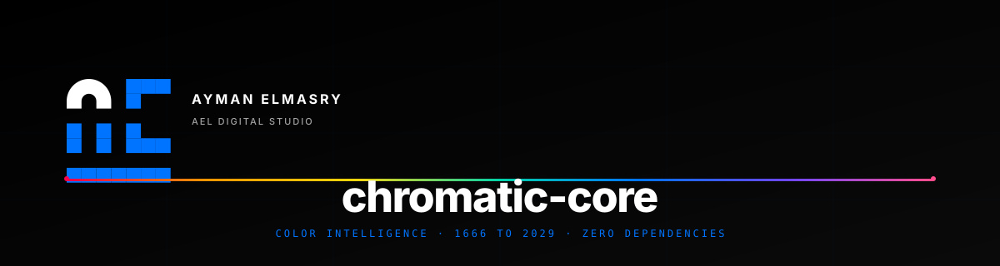

Color Intelligence, Reimagined.
A sovereign 5-layer color engine combining philosophy, probability, and logic — from Newton's prism (1666) to perceptual uniformity (2029+).
What chromatic-core Delivers
Professional-grade color intelligence for developers, designers, and brand architects.
15+ Color Spaces
HEX · RGB · HSL · OKLCH · CIELAB · CMYK · Pantone · HSLuv and more.
5 Philosophical Schools
Newton · Goethe · Munsell · Itten · OKLCH — every color decision grounded in theory.
Probability Engine
Bayesian harmony matching and Markov chains for intelligent color prediction.
Logic Layer
Color algebra, predicates, and constraint satisfaction for systematic palettes.
Color Timeline
25+ historical events — from Newton's prism (1666) to AI-native colors (2029+).
Palettes Library
Curated collections: Material, Nord, Dracula, Tokyo Night, and AEL Brand System.
WCAG 2.2 AA
Automated contrast checking with AAA/AA/FAIL grading.
20+ Export Formats
CSS · SCSS · Tailwind · JSON · Figma · SwiftUI · Python and more.
5-Layer Architecture
Each layer depends only on lower-numbered layers. Clean separation of concerns.
Application
Timeline · Ultra Prompt Generator · Palettes · Export (20+ formats)
Logic
Color algebra · Predicates · Set operations · Constraint satisfaction
Probability
Bayesian harmony · Markov chains · Statistical distributions
Philosophy
Newton · Goethe · Munsell · Itten · OKLCH · 8 Golden Rules
Core
Color math (15+ spaces) · Mulberry32 PRNG · Conversion engine
Built for Professionals
Zero dependencies. Full control. Pure HTML5 + CSS3 + Vanilla JavaScript.